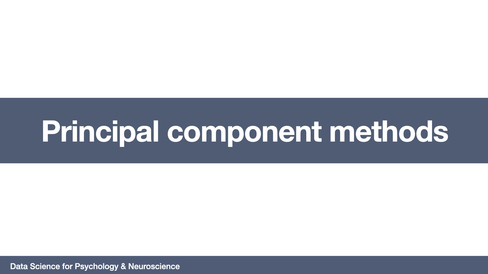

Information and Meaning
Knowledge
Understanding
=======================
Chapter 6: Linear model selection and regularization. James, G., Witten, D., Hastie, T., & Tibshirani, R. (2013). An introduction to statistical learning: with applications in R (Vol. 6). New York: Springer
